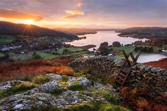
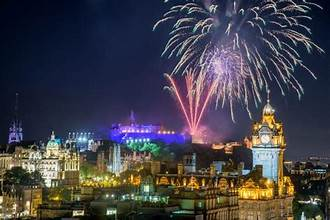

Exploring the Charm of the United Kingdom
The United Kingdom, with its rich history, stunning landscapes, and vibrant culture, has always been a dream destination for many travelers. In this travel story, I'll take you on a journey through some of the most captivating destinations in the UK.

London: The Heart of England
Our adventure begins in London, the bustling capital of the United Kingdom. The city is a melting pot of history and modernity. We explored iconic landmarks like Big Ben, the Tower of London, and Buckingham Palace. A walk along the River Thames offered mesmerizing views of the city's skyline.

The Serenity of the Lake District
Next, we ventured to the Lake District in northern England. This region is a paradise for nature lovers. We spent our days hiking around tranquil lakes, including Windermere and Ullswater, and indulged in traditional afternoon tea in charming tea rooms.
Edinburgh: A City of Festivals
Our final destination was Edinburgh, Scotland's capital. We timed our visit during the world-famous Edinburgh Festival Fringe, a celebration of arts and culture. The city came alive with street performances, comedy shows, and art exhibitions. The Royal Mile and Edinburgh Castle provided a historic backdrop to the festivities.
Read More